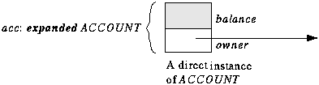

|


 AN INVITATION TO EIFFEL
AN INVITATION TO EIFFEL
4 TYPES
Eiffel is strongly typed for readability and reliability. Every entity
is declared of a certain type, which may be either a reference type or
an expanded type.
Any type T is based on a class, which defines the operations
that will be applicable to instances of T. The difference between
the two categories of type affects the semantics of an entity x
declared of type T: for a reference type, the most common case,
possible values for x are references to objects; for an expanded
type, the values are objects. In both cases, the type rules guarantee that
the objects will be instances of T.
A non-expanded class such as ACCOUNT yields a reference type.
As a result, an entity of type ACCOUNT, such as acc in the
earlier client example (see the declaration of acc and the accompanying
picture as given earlier), denotes possible run-time references to objects
of type ACCOUNT.
In contrast, the value of an entity acc declared of type expanded
ACCOUNT is an object such as the one shown on the figure
below, with no reference. The only difference with the earlier figure is
that the value of acc is now an ACCOUNT object, not a reference
to such an object. No creation instruction is needed in this case. (The
figure does not show the PERSON object to which the owner field
of the ACCOUNT object -- itself a reference -- is attached.)

An entity of expanded type
An important group of expanded types, based on library classes, includes
the basic types INTEGER, REAL, DOUBLE, CHARACTER and BOOLEAN.
Clearly, the value of an entity declared of type INTEGER should
be an integer, not a reference to an object containing an integer value.
Operations on these types are defined by prefix and infix operators such
as "+" and "<".
As a result of these conventions, the type system is uniform and consistent:
all types, including the basic types, are defined from classes, either
as reference types or as expanded types.
In the case of basic types, for obvious reasons of efficiency, the ISE
Eiffel compilation mechanism implements the standard arithmetic and boolean
operations directly through the corresponding machine operations, not through
routine calls. But this is only a compiler optimization, which does not
hamper the conceptual homogeneity of the type edifice.
Previous
Chapter Table
of Contents Next
Chapter
|